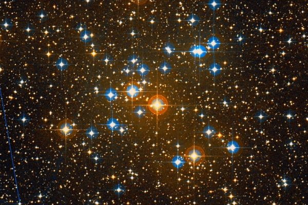
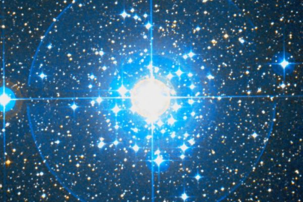

Латинское название: Canis Major
Большой пес - это собака Икария Мера, нашедшая тело своего хозяина, убитого пьяными пастухами. Она привела Эригону, дочь Икария, на его могилу, где та и повесилась в отчаянии, прокляв убийц. Пастухи были найдены и казнены по наводке Дельфийского оракула.
Однако ж, и здесь не без разночтений.
Например, возможно, Большой пес - это собака, которой Зевс поручил сторожить Европу на Крите.
Или один из псов Актеона, загрызший собственного хозяина, когда тот был превращен в оленя.
Или собака Сириус Ориона - красавца охотника. Или - гончая Кефала.
Лелап, собака Кефала и Прокриды, никогда не упускавшая добычу.
Наконец, некоторые не боятся вспомнить и страшного Кербера, трехглавого пса Аида!
В созвездии есть пара рассеянных звездных скоплений.
Одно из них - Малый Улей (M41) недалеко от Сириуса.
Второе - NGC 2362, одно из самых молодых скоплений: возраст его около 1 миллиона лет.
